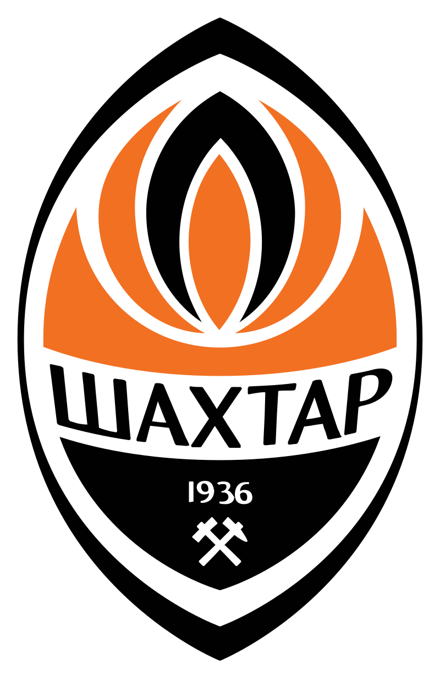
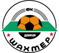
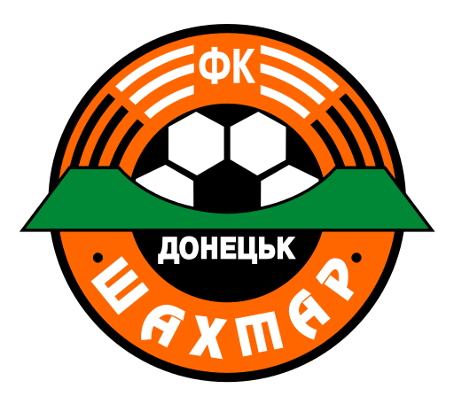

До 2014 року проводив домашні ігри у Донецьку на стадіоні «Донбас Арена». Через війну на сході України «Шахтар» переїхав до Києва, і з 2014 року тренувальною базою «гірників» є олімпійський комплекс «Святошин». У 2014—2016 роках «Шахтар» провів більшість домашніх матчів у Львові на «Арені Львів», з лютого 2017 року до березня 2020 року клуб грав на ОСК «Металіст» у Харкові. З травня 2020 року домашнім стадіоном «Шахтаря» став НСК «Олімпійський» у Києві. Контракт щодо виступів «гірників» на «Олімпійському» підписано на три роки.

Донеччани представляли СРСР у кін. 1970-х — поч. 1980-х рр. і провели за цей період 18 ігор (+10 =3 −5). Єдиним футболістом, котрий зіграв в усіх тих матчах, був Михайло Соколовський, а найкращими бомбардирами стали Віктор Грачов, Сергій Морозов та Михайло Соколовський, які забили по 5 м'ячів.
Після 10-річної перерви «гірники» дебютували на євроарені як представник України — у сезоні 1994/1995. Після 2000 року донеччани регулярно виступають у кваліфікаційних і основних раундах Ліги чемпіонів.
У 1936 році було відкрито перший стадіон донецької команди, який називався «Шахтар». Наприкінці 40-х років стадіон занепав і його реконструювали, його місткість дорівнювала 25 000 глядацьких місць. У 1954 році стадіон оснастили електричним освітленням і він став другим в СРСР стадіоном з такими функціями. У 1966 році стадіон знову потребував реконструкції, його місткість збільшилася до 42 000 місць. Стадіон став двоярусним, придбав сучасне електротабло. У період з 1978 по 1981 року була проведена ще одна реконструкція, а саме встановлено систему дренажу і підігріву. Після розпаду СРСР і утворення нового чемпіонату «Шахтар» продовжував виступати на цьому стадіоні. І в 1999 році, в зв'язку з передбачуваними виступами «Шахтаря» в Лізі чемпіонів на стадіоні була проведена корінна реконструкція. Були встановлена пластикові сидіння, скоротилася місткість до 32 000. Модернізовані підігрів та освітлення.
На РСК «Олімпійський» свої домашні матчі «Шахтар» проводив з березня 2004 року. Сам стадіон був відкритий в 1958 році і раніше називався «Локомотив». Він був побудований силами Донецької залізниці. Будівництво стадіону повністю було завершено в 1970 році. У 2003 році на стадіоні пройшла глобальна реконструкція. На стадіоні проводила свої матчі молодіжна збірна України, а незабаром свої матчі тут почав проводити «Шахтар». Останнім матчем «Шахтаря» на цьому стадіоні став матч кваліфікаційного раунду Ліги Європи проти «Сівасспора». Також з 21 липня по 2 серпня на стадіоні проходив юнацький чемпіонат Європи. Стадіон прийняв матчі групового етапу, півфінал і фінал.
Відкриття стадіону відбулося 29 серпня 2009 року. Сидіння стадіону трьох кольорів: чорного, помаранчевого і білого. Вони уособлюють Донбас і клубні кольори. Фасад стадіону повністю виконаний зі скла, і завдяки підсвічуванню в нічний час стадіон виблискує. Дах стадіону накриває 93 % глядацьких місць. На стадіоні проводилися матчі Євро-2012: 3 групових, чвертьфінал і півфінал. У матчі того Євро-2012, в якому зустрілися збірна Франції й збірна України, матч припинився через погодні умови, але згодом було вирішено продовжити гру. «Донбас Арена» вміщує 51 504 глядачів. Через 5 років, під час бойових дій команда була змушена перейти на інший стадіон.
Навесні 2014 року через війну на сході України проведення футбольних матчів у Донецьку стало неможливим. З цього часу до кінця 2016 року місцем проведення домашніх матчів єврокубків, чемпіонату та кубку України для донецького «Шахтаря» став львівський стадіон «Арена Львів».
З лютого 2017 року до березня 2020 року «Шахтар» грав домашні матчі на харківському стадіоні «Металіст»
З травня 2020 року домашнім стадіоном «Шахтаря» став НСК «Олімпійський» у Києві. Контракт щодо виступів «гірників» на «Олімпійському» підписано на три роки. «Шахтар» планує відкрити на «Олімпійському» свій офіс та фан-шоп.
Першою емблемою клубу «Стахановець» був шестикутник блакитного кольору із червоною окантовкою, у центрі якого літеру «С» перетинає відбійний молоток. Затверджено дану емблему в травні 1936 року.
У 1946 році, коли спортивне товариство й команда були перейменовані зі «Стахановця» в «Шахтар», на емблемі клубу з'явилися напис ДСТ «Шахтер» (російською мовою), а також зображення терикона й копра.
У середині 1960-х з'явилася нова емблема, де в центрі були два перехрещені молоти, а по колу було нанесено напис «Шахтер» • «Донецк». В ці роки емблема з'явилася на футболці й з тих пір постійно перебуває на ній за винятком декількох сезонів на початку 90-х.
У 1989 році у зв'язку з реорганізацією клубу й створенням госпрозрахункової організації художник Віктор Савілов запропонував ескіз нової емблеми. Уперше на емблемі з'явилися футбольний м'яч і елемент футбольного поля
У сезоні 1989 року і навіть на початку 1990 донецький «Шахтар» грав зі своїм колишнім логотипом з молоточками на формі. Новий логотип з'явився лише до осені 1990 року. Але з якоїсь причини, логотипу Віктора Савілова не судилося з'явитися на футболках донецьких футболістів. Ця емблема використовувалася тільки в поліграфічної продукції: квитках, програмках до домашніх матчів, сувенірних значках.
1997 року емблемі надали сучасніший вигляд: круглу основу перефарбували в традиційний для гірників помаранчевий колір, м'яч помітно збільшили і зробили класично білим з чорними плямами, зірочки по краях замінили на крапки, смуги навколо «ФК» стали товщим і розділилися на два відрізки — нижні чорні та верхні білі; змінили шрифт леттерінга (напис з назвою команди) на шрифт Revue зі зміненою літерою «Т». Логотип був розроблений на трьох мовах: українській, російській та англійській.
5 грудня 2007 року «Шахтар» представив новий логотип, який розробило італійське представництво компанії «Інтербренд»[88]. Уперше назву команди написано українською мовою.
Символіка:

Логотип клубу «Шахтар» (1989-1997)

Логотип клубу «Шахтар» (1997-2007)